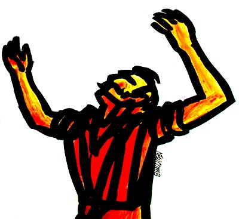

Niye gülüyorsun öyle Patron?
Neden öyle bakıyorsun bana?
Benim şarabım böyledir, içimde her zaman bağıran bir şeytanım vardır. O ne derse ben onu yaparım.
Ne zaman boğulacak gibi olsam, bana şöyle seslenir:
"Oyna Zorba!"
Ben de kalkar oynarım!
Böylece boğuntum geçer.
Oğlum Dimitrakis öldüğü zaman da böyle kalkıp oynamıştım.
Ölüsünün başında hora teptiğimi gören akrabalar, dostlar, beni yakalamak, bana engel olmak istemişlerdi. "Zorba delirdi!" diye bağırmışlardı.
Ama ben orada kalkıp oynamasaydım, asıl o zaman kederimden delirecektim. Çünkü o benim ilk oğlumdu. Üç yaşındaydı ve ölmüştü. Onun yokoluşuna dayanamıyordum...
Bak patron, kalın kafalının biriyimdir ben. Sana sorduğum sorulara verdiğin o aydınca karşılıkları almıyor kafam.
Ah be patron, o bana anlatmak istediklerini kalkıp bir oynayabilseydin, onları hora teperek dile getirebilseydin!
Ya da patron, bütün bunları bana masal gibi anlatabilseydin, anlardım be patron, o zaman her şeyi anlardım...
